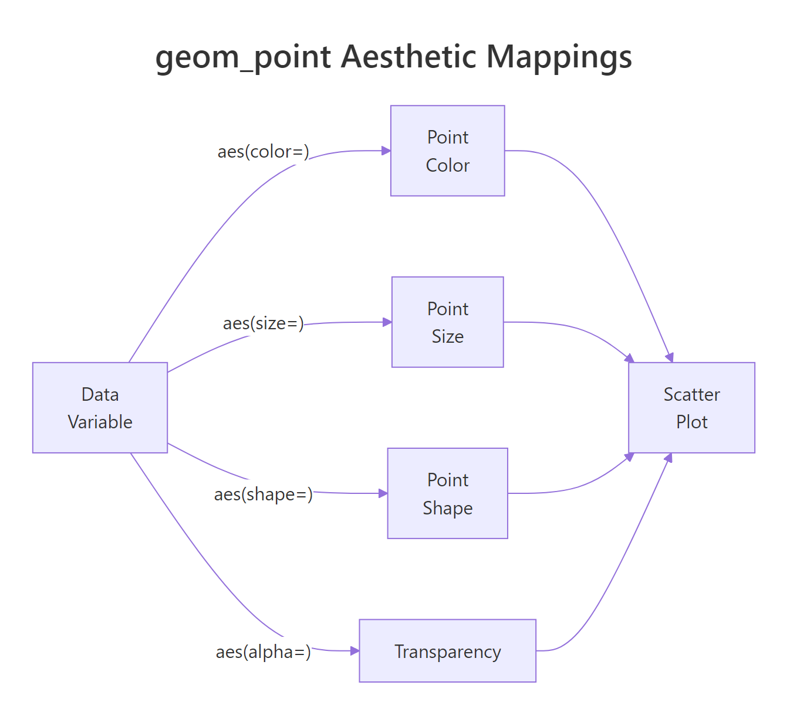
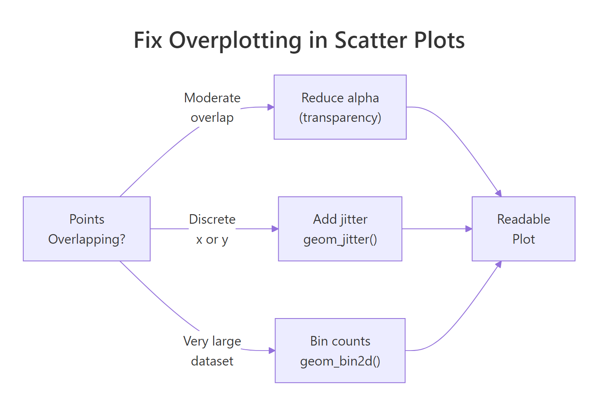

ggplot2 Scatter Plots: Map Color, Size, Shape and Add Trend Lines
A scatter plot maps two continuous variables onto x and y axes to reveal relationships, clusters, and outliers. In ggplot2, geom_point() creates the points — and layering on color, size, shape, and trend lines turns a basic chart into a diagnostic tool.
Introduction
Imagine you have fuel efficiency data for 234 cars. You suspect that engine displacement affects highway miles per gallon, but you also think transmission type plays a role. A scatter plot can show all three dimensions at once — displacement on x, mpg on y, and transmission type as color. Three variables, one chart, instant pattern recognition.
That is the power of geom_point(). The function plots a point for every row in your data, and ggplot2's aesthetic mapping system lets you encode up to five variables simultaneously: x position, y position, color, size, and shape. Add a trend line with geom_smooth() and you go from "I see a pattern" to "here is the direction and uncertainty of that pattern."
In this tutorial, you will learn how to:
- Build a scatter plot from scratch with
geom_point() - Map continuous and categorical variables to color, size, and shape
- Add trend lines using
geom_smooth()with linear and smoothed fits - Fix overplotting when your data has too many points
- Annotate specific points with labels
All code blocks share a single session — variables created early are available in later blocks.
How does geom_point() build a scatter plot?
Every ggplot2 chart starts with ggplot(), which sets up the coordinate system, and a geom_*() layer, which draws the actual marks. For scatter plots, geom_point() draws one point per row at the x and y coordinates you specify.
Let's load ggplot2 and create a working dataset. The built-in mpg dataset has 234 rows of car fuel efficiency data. We'll sample 150 rows to keep the plots readable in this tutorial.
Now let's draw the most basic scatter plot — engine displacement (displ) on the x-axis, highway mpg (hwy) on the y-axis:
The negative slope is immediately visible — bigger engines get fewer miles per gallon. The aes() call inside ggplot() defines the data-to-visual mapping: displ on x, hwy on y. Everything inside aes() reads from your data frame.
KEY INSIGHT: There are two places to set point properties in
geom_point(). Insideaes()— maps a variable to a property (data-driven). Outsideaes()— sets a fixed value for all points.geom_point(aes(color = drv))colors by drive type.geom_point(color = "blue")colors everything blue.
Try it: Change the y-axis to city mpg (cty) instead of hwy. Does the negative relationship with displacement hold?
How do you map color, size, and shape to variables?
The real power of geom_point() shows up when you encode a third (or fourth) variable through visual aesthetics. ggplot2 handles the mapping, legend, and color scale automatically.

Figure 1: How data variables map to visual aesthetics in geom_point().
Here's how to map three variables at once — drive type to color, number of cylinders to size, and vehicle class to shape:
A few things to notice:
color = drvassigns a different color per drive type. Sincedrvis categorical, ggplot2 uses a discrete color scale.size = cylscales point area by cylinder count. Larger points = more cylinders.alpha = 0.8sits outsideaes()— it applies a fixed 80% opacity to every point, which helps when points overlap.scale_color_brewer()swaps the default colors for a ColorBrewer palette, which is colorblind-friendlier.
TIP: Map at most two extra aesthetics (color + one other) before the chart becomes hard to read. Three aesthetics (color + size + shape) simultaneously is usually too much. Pick the encoding that best serves your story.
WARNING: Never map a continuous variable to
shape. Shapes are discrete — ggplot2 only has 6 default shapes, so a continuous variable mapped to shape will either fail or produce misleading results. Usecolororsizefor continuous variables.
Try it: Map only class (vehicle class) to color. How many distinct colors appear in the legend?
How do you add trend lines with geom_smooth()?
A scatter plot shows whether a relationship exists. geom_smooth() quantifies its direction and shape. Layer it directly on top of your scatter plot — it uses the same aes() mappings automatically.
The shaded ribbon around the line is the 95% confidence interval (se = TRUE). A narrow ribbon means the trend is well-constrained by data. A wide ribbon means high uncertainty — usually from sparse data at the extremes.
geom_smooth() supports several method options:
| Method | What it fits | Use when |
|---|---|---|
"lm" |
Straight line (OLS regression) | You expect a linear relationship |
"loess" |
Local polynomial smooth | You want a flexible, data-driven curve |
"gam" |
Generalized additive model | You need a smooth with more statistical rigour |
"glm" |
Generalized linear model | You have binary or count outcomes |
Let's compare a linear fit versus a loess smooth on the same data:
Notice how the loess curve follows the dip around displacement = 3. The linear fit misses that local pattern. When you're not sure whether the relationship is linear, loess is a safer starting point.
TIP: If your scatter plot is grouped by color (
aes(color = drv)),geom_smooth()will automatically draw one trend line per group — one per drive type. This is handy but can clutter the chart. Addgeom_smooth(aes(group = 1))to force a single combined trend line across all groups.
Try it: Add geom_smooth(method = "lm", se = FALSE) to p_basic (from the first block). Does removing the confidence band make the chart cleaner?
How do you handle overplotting in large datasets?
When your dataset has thousands of rows, scatter plots become a solid mass of overlapping dots. You lose all sense of density — you can't tell whether a region has 10 points or 1,000. There are three practical fixes.

Figure 2: Decision guide for fixing overplotting in scatter plots.
Fix 1: Reduce alpha (transparency)
The simplest fix. When multiple points overlap, their colors stack and the area appears darker — giving a rough sense of density.
Fix 2: Use geom_jitter() for discrete x-variables
When one axis is categorical or discrete, points stack directly on top of each other. geom_jitter() adds random noise to the positions, spreading points out so you can see the distribution within each group.
Fix 3: Use geom_bin2d() for very large datasets
For truly large datasets (100K+ rows), even transparency doesn't help much. geom_bin2d() divides the plot area into rectangular bins and fills each bin according to count — giving a heatmap-style view of density.
The color scale now reveals that most diamonds cluster below 1.5 carats and below $5,000 — information that's invisible in a plain scatter plot.
Try it: Try geom_hex() (from the hexbin package) as an alternative to geom_bin2d(). Hexagonal bins often look cleaner than rectangular ones.
How do you annotate and label points in a scatter plot?
Sometimes you want to call out specific points by name — outliers, key observations, or benchmark values. ggplot2 provides geom_text() for simple labels, and the ggrepel package prevents them from overlapping.
The trick here is passing a filtered dataset (worst_mpg) to the label layers via data = worst_mpg. The main geom_point() still uses the full dataset — only the labels and highlight points use the filtered set.
TIP:
geom_label_repel()fromggrepeldraws labels with a background box and automatically moves them to avoid overlap. Plaingeom_text()is fine for a handful of labels but becomes unreadable quickly. Useggrepelwhen you have more than 3-4 labels.
Try it: Change the label from model to paste(model, hwy) to show both the car model and its mpg value in each label.
Common Mistakes and How to Fix Them
Mistake 1: Mapping a variable outside aes()
❌ This sets all points to the column name as a literal string, not the column values:
✅ Move variable mappings inside aes():
Mistake 2: Overusing geom_smooth without checking assumptions
❌ Using method = "lm" on a clearly non-linear relationship forces a line that misrepresents the data. Always plot without a trend line first, then decide what shape makes sense.
✅ Default geom_smooth() (no method) uses loess for small datasets and gam for large ones — a safer starting point than immediately jumping to linear.
Mistake 3: Forgetting alpha on dense plots
❌ A scatter plot of 50,000 points without alpha looks like a filled rectangle — no information visible.
✅ Start with alpha = 0.1 or lower and increase until individual points are discernible. For very large datasets, switch to geom_bin2d().
Mistake 4: Using shape for a continuous variable
❌ aes(shape = cyl) will either throw an error or silently drop levels since shapes are discrete.
✅ Use aes(color = cyl) or aes(size = cyl) for continuous variables. Reserve shape for categorical variables with 6 or fewer levels.
Mistake 5: Not labeling the trend line method
❌ Adding geom_smooth() without noting in the title or caption what method was used leaves readers confused about what the line represents.
✅ Add a subtitle or caption: labs(subtitle = "Trend: OLS linear regression, shaded = 95% CI").
Practice Exercises
Exercise 1: Multi-aesthetic scatter plot
Using the full mtcars dataset, create a scatter plot of wt (weight) vs mpg. Map hp (horsepower) to color and gear (number of gears, treat as factor) to shape. Add a loess trend line. Give the chart a descriptive title and clean axis labels.
Exercise 2: Fix overplotting in a real dataset
The diamonds dataset has 53,940 rows. Create a scatter plot of carat vs price, colored by cut. Since overplotting is severe:
- First try
alpha = 0.05withgeom_point() - Then try
geom_bin2d()withfacet_wrap(~ cut)
Which version reveals the distribution within each cut quality more clearly?
Complete Example
Let's put everything together. This final chart uses the full mpg dataset, maps two aesthetics, adds a per-group trend line, and facets by drive type for a comprehensive view.
This chart answers three questions simultaneously: How does displacement relate to mpg? Does that relationship differ by drive type? And which vehicle classes appear in each drive category?
Summary
| Task | Code |
|---|---|
| Basic scatter plot | geom_point() |
| Color by category | aes(color = var) + geom_point() |
| Size by numeric | aes(size = var) + geom_point() |
| Fixed color, all points | geom_point(color = "blue") |
| Linear trend line | geom_smooth(method = "lm") |
| Flexible smooth | geom_smooth(method = "loess") |
| Fix overlap (moderate) | geom_point(alpha = 0.2) |
| Fix overlap (discrete x) | geom_jitter(width = 0.2) |
| Fix overlap (large data) | geom_bin2d(bins = 40) |
| Label specific points | geom_label_repel(data = subset, aes(label = col)) |
Key rules:
- Use
aes()for data-driven mappings; set fixed values outsideaes() - Use
colororsizefor continuous variables; useshapeonly for categoricals with ≤ 6 levels - Always check for overplotting — even 2,000 points can obscure patterns
- Add
geom_smooth()after inspecting the raw scatter to choose the right method
FAQ
Can I use geom_point() with one categorical and one continuous variable?
Yes, but the result shows discrete columns of points — often with severe overplotting. Use geom_jitter() instead, or switch to a boxplot or violin plot which are designed for that layout.
Why does my geom_smooth() give different results with method = "lm" vs no method?
Without specifying method, ggplot2 uses loess for datasets with fewer than 1,000 rows and gam for larger ones. Both are flexible curves. method = "lm" forces a straight line. If the true relationship is curved, lm will underfit and the line will look wrong.
How do I remove the confidence interval ribbon from geom_smooth()?
Set se = FALSE: geom_smooth(method = "lm", se = FALSE).
Can I change the point shapes manually?
Yes. scale_shape_manual(values = c(16, 17, 15)) maps categories to specific shape codes. R's shape codes 0-25 cover circles, triangles, squares, crosses, and filled/hollow variants. Shape 16 (filled circle) and 17 (filled triangle) are the most readable in print.
Why does ggplot2 show a warning about rows removed when plotting?
If your data contains NA values in the x or y columns, geom_point() removes those rows and warns you. Filter out NAs before plotting with na.omit(df[, c("x_col", "y_col")]) or dplyr::filter(!is.na(x_col), !is.na(y_col)).
References
- Wickham, H. (2016). ggplot2: Elegant Graphics for Data Analysis. Springer. https://ggplot2-book.org/
- ggplot2 reference —
geom_point(). https://ggplot2.tidyverse.org/reference/geom_point.html - ggplot2 reference —
geom_smooth(). https://ggplot2.tidyverse.org/reference/geom_smooth.html - Wilke, C. O. (2019). Fundamentals of Data Visualization. O'Reilly. https://clauswilke.com/dataviz/
- R Graph Gallery — Scatter Plots. https://r-graph-gallery.com/scatter-plot.html
- Slowikowski, K. ggrepel package documentation. https://ggrepel.slowkow.com/
- ColorBrewer palettes for R. https://colorbrewer2.org/
Continue Learning
- ggplot2 Line Charts — connect points over time or ordered categories with
geom_line()and customize line types, colors, and groups. - ggplot2 Bar Charts — compare counts and values across categories using
geom_bar()andgeom_col()with full control over stacking and ordering. - ggplot2 Distribution Charts — understand how your data is spread with histograms, density plots, boxplots, and violin plots.
Further Reading
- Heatmap in R: Build and Customize with ggplot2 geom_tile()
- Bubble Chart in R: Add a Third Variable to Your Scatter Plot
- Error Bars in R with ggplot2: SD, SE, and Confidence Intervals
- geom_smooth in R: Add Trend Lines and Confidence Bands to Plots
- Correlation Matrix Plot in R: corrplot, ggcorrplot, and ggplot2